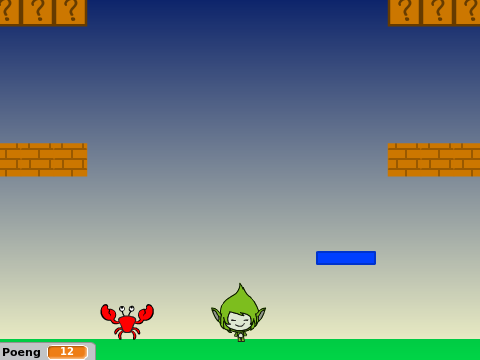
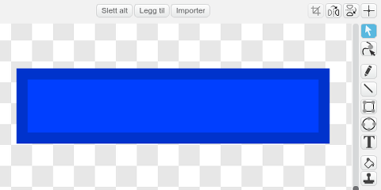
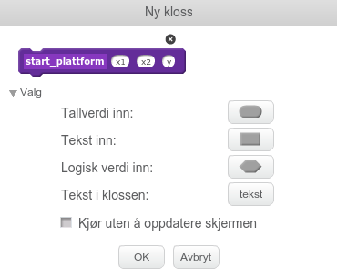

Før Super Mario fikk sine egne spill het han Jumpman. I dette
prosjektet skal vi lage et Super Mario-lignende plattformspill. Det er
ganske involvert, og vi vil derfor dele opp prosjektet i fire deler
som til sammen blir et spennende spill.
I denne fjerde og siste delen vil vi se hvordan vi kan implementere
flere nivåer i spillet, samt hvordan vi designer spennende elementer
som smarte fiender og bevegelige plattformer.

Oversikt over prosjektet
Dette prosjektet består av 4 deler hvor vi stadig videreutvikler
spillet vårt.
I del 1 programmerte vi helten vår,
Jumpman, og spesielt animerte vi ham alt etter som om han stod i ro,
løp eller hoppet.
I del 2 så vi hvordan vi kunne oppdage
at Jumpman berørte forskjellige ting, og spesielt hvordan vi kunne se
forskjellen på om han hoppet opp i en plattform eller stod på toppen
av den.
I del 3 utvidet vi verdenen vår ved å
flytte på bakgrunnen. Vi kunne da løpe rundt og oppdage plattformer
utenfor skjermen.
I denne fjerde og siste delen vil vi lære hvordan vi lager flere
nivåer, samt hvordan vi kan inkludere elementer som smarte fiender
og bevegelige plattformer.
Steg 1: Flere nivåer
La oss først se hvordan vi kan lage flere brett eller nivåer i spillet vårt.
Sjekkliste
Hent inn Jumpman-spillet som du har programmert i
del 1, del 2 og
del 3.
Lag en variabel som gjelder for alle figurer. La den hete (nivå) og
den kan godt være synlig på skjermen om du vil det.
Lag så et mål i spillet ditt om du ikke har det allerede. Dette kan være for
eksempel en skatt man må finne (kanskje den er gjemt inne i en murstein?)
eller som i første brettet på Super Mario, et flagg man må nå og heise opp.
La denne figuren øke (nivå) og sende meldingen avslutt brett når den
blir funnet. For eksempel,
når jeg mottar [sjekk plattform v]
hvis <berører [Kontroller v]>
endre [nivå v] med (1)
send melding [avslutt brett v]
slett denne klonen
slutt
Vi må nå passe på at vi sletter alle kloner når et brett avsluttes. Legg
derfor et lite skript på alle figurer som lager kloner, som slett denne klonen etter når jeg mottar [avslutt brett v].
Vi skal nå flytte litt rundt på skriptene på Scenen slik at vi kan starte
forskjellige brett.
når jeg mottar [nytt spill v]
sett [nivå v] til [1]
send melding [nytt brett v]
når jeg mottar [nytt brett v]
send melding (sett sammen [start nivå ] (nivå))
for alltid
send melding [oppdater sensor v]
send melding [sjekk sensor v]
send melding [fysikk v]
send melding [sjekk plattform v]
send melding [sjekk tastetrykk v]
send melding [flytt figur v]
send melding [oppdater kamera v]
send melding [vis animasjon v]
slutt
Pass på at det skal være et mellomrom etter start nivå for at vi skal kunne
motta meldinger av typen start nivå 1 og start nivå 2, avhengig av verdien
av nivå.
Legg et avslutt brett-skript på Scenen også. Dette skal avslutte
hovedløkken, og deretter starte den på nytt:
når jeg mottar [avslutt brett v]
stopp [andre skript på scenen v] :: control
vent (1) sekunder
send melding [nytt brett v]
Siden vi byttet ut send melding [startposisjon v] med send melding (sett sammen [start nivå ] (nivå)) må vi oppdatere når jeg mottar [startposisjon v]-klossene også. Endre disse til
når jeg mottar [start nivå 1 v]
på alle figurene.
Om du prøver spillet ditt igjen nå skal det fungere omtrent slik det gjorde
tidligere. Det nye er at nå har du muligheten til å designe flere brett!
Lag nye brett ved å lage når jeg mottar [start nivå 2 v] og tilsvarende
klosser på de forskjellige figurene hvor du forteller hvordan brettene skal se
ut.
Steg 2: Bevegelige plattformer
Hvordan kan vi lage plattformer som beveger seg, og som flytter Jumpman også?
Sjekkliste
Tegn en ny figur som kan fungere som en plattform. Denne kan gjerne være et
ganske avlangt rektangel:

Kopier sjekk_sensor- og vis_animasjon-skriptene fra for eksempel
Murstein til plattform-figuren, siden disse vil være omtrent identiske.
For å få plattformene til å bevege seg trenger vi tre nye variabler. Legg til
(startX), (sluttX) og (fartX) og pass på at de gjelder kun
for denne figuren.
Vi må sette verdien av disse variablene for hver plattform vi vil lage. La oss
derfor lage en ny kloss som gjør dette for oss. Gå til Flere klosser-kategorien, og Lag en kloss.
Lag en kloss som heter start plattform og under Valg
legger du til tre felter for Tallverdi inn. Kall disse feltene x1, x2 og
y.

Definer klossen som følger:
definer start plattform (x1) (x2) (y)
sett [posX v] til (x1)
sett [posY v] til (y)
sett [startX v] til (x1)
sett [sluttX v] til (x2)
sett [fartX v] til [2]
lag klon av [meg v]
Du kan nå lage plattformer ved å bruke denne nye klossen. For eksempel,
For at plattformen skal flytte på seg må vi skrive et skript på flytt figur-meldingen:
når jeg mottar [flytt figur v]
endre [posX v] med (fartX)
hvis <<(posX) < (startX)> eller <(posX) > (sluttX)>>
sett [fartX v] til ((-1) * (fartX))
slutt
Denne passer også på at plattformen snur når den kommer til (sluttX).
Om du tester spillet ditt nå skal plattformen bevege seg, men Jumpman sklir
bare av plattformen i stedet for å følge med. Hvordan kan vi få ham til å
følge plattformen?
Vi innfører en ny variabel. Denne skal gjelde for alle figurer og kan hete
(plattform - fartX). Den skal si hvor mye vi må flytte Jumpman på grunn
av plattformer.
Inne i testen hvis <berører [Sensor - Fot v]?> kan du også legge til
klossen sett [plattform - fartX v] til (fartX), mens du legger til et
skript for å nullstille farten om ikke Jumpman står på plattformen:
når jeg mottar [oppdater sensor v]
sett [plattform - fartX v] til [0]
Til slutt legger vi på denne farten til farten Jumpman allerede har. Gå til
Kontroller og endre endre [posX v] med (fartX) i flytt figurer-skriptet til
endre [posX v] med ((fartX) + (plattform - fartX))
Prøv selv
Vi har nå laget plattformer som beveger frem og tilbake. Kan du lage
plattformer som kan bevege seg opp og ned? Du må stort sett gjøre det samme
som over, men med Y i stedet for X.
Steg 3: Skumle fiender
Til sist skal vi se på noen skumle fiender som prøver å ta oss. Men om vi bare
hopper på hodet deres går det nok bra!
Sjekkliste
Fiender oppfører seg faktisk ganske likt plattformer. De vil også bevege seg
frem og tilbake. Forskjellen er at i stedet for å følge etter om vi er borti
en fiende skal vi tape spillet.
Lag en ny fiendefigur. Tegn denne gjerne selv.
Følg de samme stegene som for plattformen slik at fienden beveger seg frem og
tilbake. Det vil si at du må kopiere sjekk_sensor- og
vis_animasjon-skriptene, lage nye variabler, definere en ny start fiende-kloss og lage et flytt_figur-skript.
For å sjekke om fienden tar oss kan vi endre på sjekk sensor-skriptet. Om du
for eksempel skriver
når jeg mottar [sjekk sensor v]
hvis <berører [Sensor - fot v]?>
sett [sensor - fot v] til [ja]
slett denne klonen
ellers
hvis <berører [Sensor - hode v]?>
send melding [tap v]
slutt
hvis <berører [Sensor - venstre v]?>
send melding [tap v]
slutt
hvis <berører [Sensor - høyre v]?>
send melding [tap v]
slutt
slutt
vil vi kunne fjerne fienden ved å hoppe på ham (vi berører ham med foten),
mens vi taper om han berører oss på de andre sensorene først.
Lag en effekt om meldingen tap blir sendt. La gjerne denne sende meldingen
avslutt brett etterpå slik at brett blir ryddet opp.
Steg 4: Videreutvikling av spillet
Om du har gjort alle delene har du nå et ganske avansert spill! Forhåpentligvis
har du fortsatt litt oversikt over hvordan ting henger sammen slik at du kan
fortsette å utvikle spillet ditt slik du ønsker!
Ideer til videreutvikling
Du kan videreutvikle dette spillet på mange måter: Flere animasjoner! Flere
typer mursteiner og ting gjemt inne i mursteinene! Flere fiender! Flere
nivåer! Bruk fantasien!
Legg på spennende lydeffekter. Husk at du kan ta opp dine egne lyder også, du
trenger ikke bare bruke lydene som er i Scratch-biblioteket.
Lag en intro til spillet, som forteller hva det handler om. Kanskje du kan
lage en liten animasjon som vises når man starter spillet?
Tell liv. Det er jo alltid kjedelig å måtte begynne spillet helt på nytt om
man er uheldig og blir fanget av en fiende. Kanskje man bare kan miste et liv,
men fortsette spillet omtrent der man tapte?
Ta tiden! Hva med å legge inn en tidsbegrensning på hvert nivå? Dette kan du
gjøre med en ny (tid)-variabel.
Husk også på at du kan velge å ta med deler av dette spillet i dine andre
spill. Kanskje vil du ha med litt animasjon eller bakgrunnsskrolling. Nå vet du hvordan!
Forbedre denne siden
Funnet en feil? Kunne noe vært bedre? Hvis ja, vennligst gi oss tilbakemelding ved å lage en sak på Github eller fiks feilen selv om du kan. Vi er takknemlige for enhver tilbakemelding!